0
Whopper préparés
Impact sur les ventes de Burger King...
40
%
A lui tout seul
7 Ingrédients
Et si on parlait en taille de pays ?
Cela ferait...

Projet réalisé par Gilliand Sami | Peretti Maxime | Winterhalter Léo